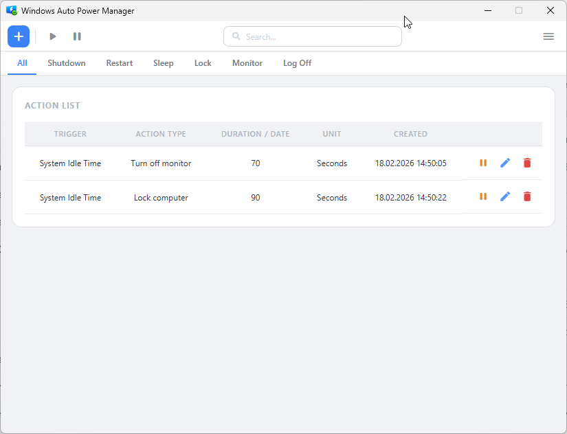
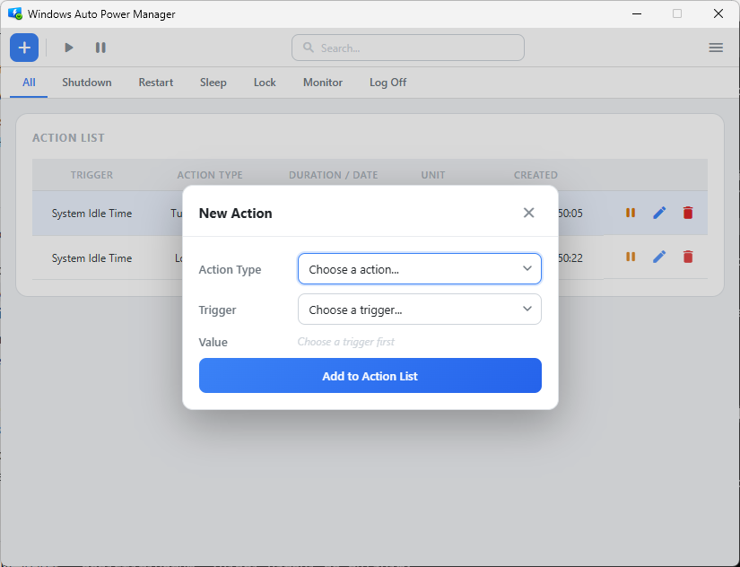
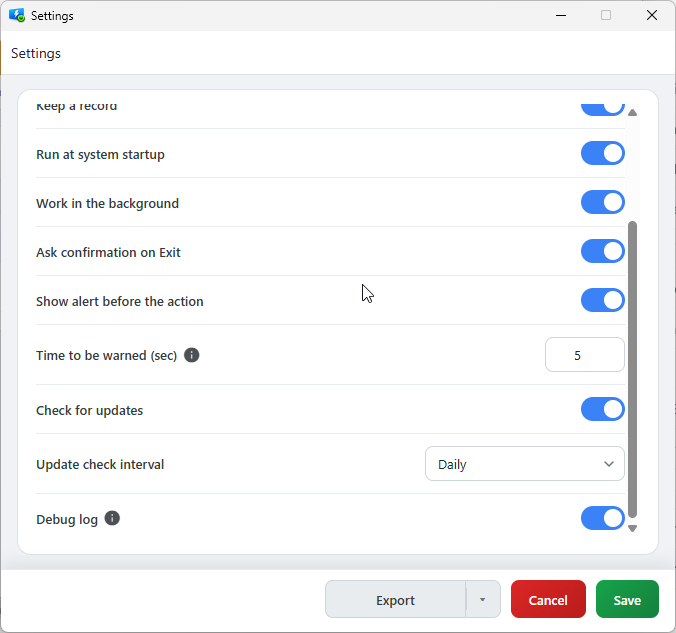
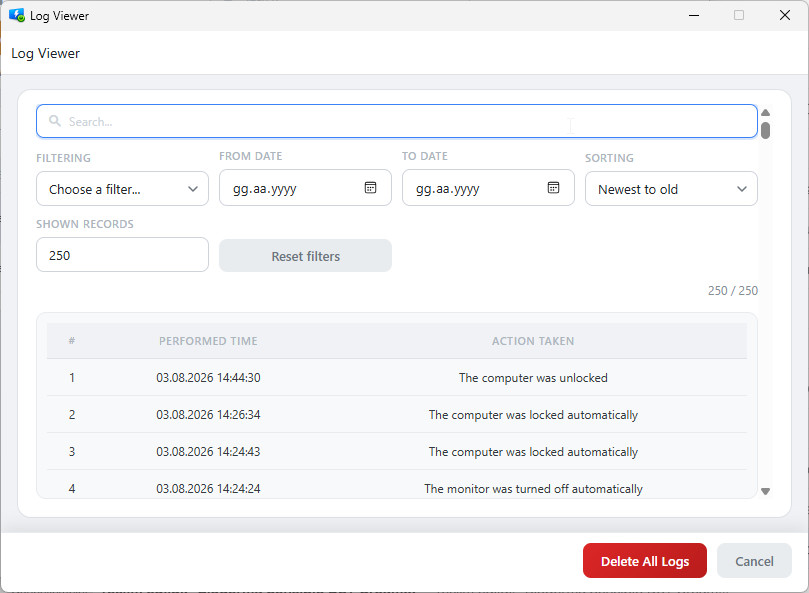
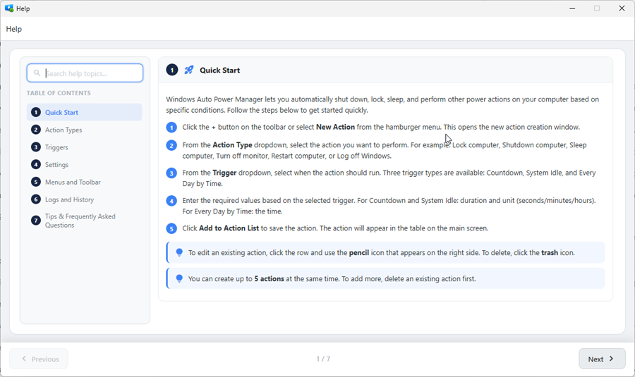
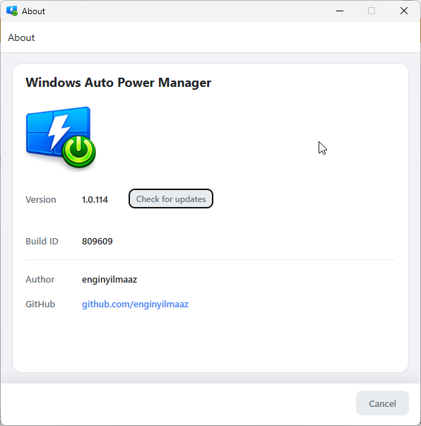
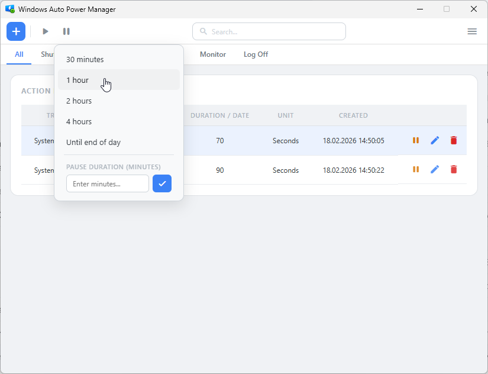
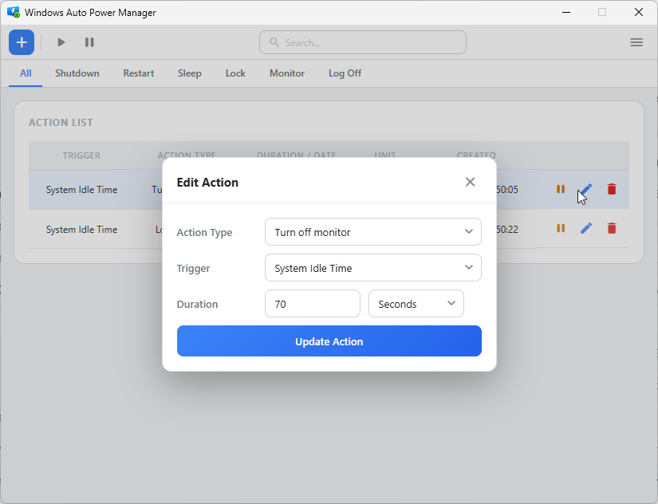

When the system is idle, at a set time, or when a countdown ends: it shuts down, sleeps, locks or turns off the display. Lives quietly in the system tray and keeps itself up to date.

Set it and forget it. It lives on the tray icon, runs its tasks on the minute, and updates itself in between.
Idle time, a set time every day, or a countdown. Up to 5 actions, with conflict checking.
A countdown notifier lets you dismiss, delete or skip before the action runs.
Suspend every action for 30 min, 1-2-4 hours, or until end of day, in one click.
Watches GitHub Releases on the interval you choose (hourly / daily / weekly), installs silently and relaunches.
Dark, light or system theme. Detects your language and speaks 14 of them.
Idle sub-windows release their memory. Logs stay bounded. Lives as a tray tool.

Settings, the log viewer, help and about pages.






Grab the installer from Releases. Takes two minutes. Needs .NET 8 and WebView2.
Click "New action", pick a system action and a trigger, set the duration, save.
Close the window — the app keeps running from the system tray.
It runs its tasks, keeps a log, and updates itself. Check the logs any time to see what it did.
The installer is about 11 MB. No hidden cost, no ads, no telemetry. The entire source is on GitHub.
Download Latest All Releases